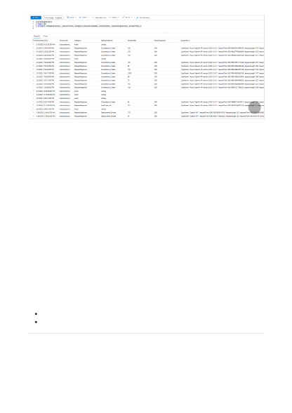
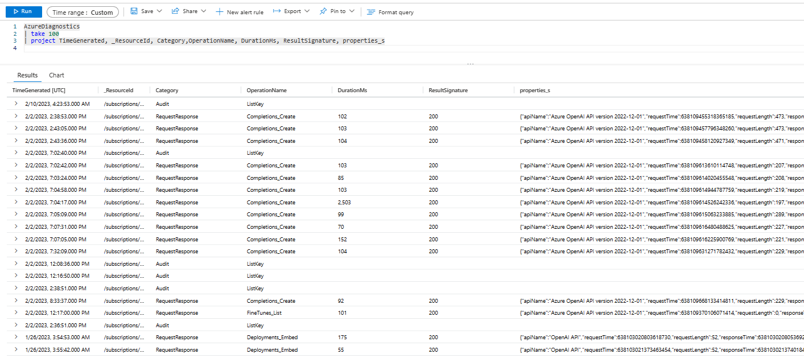

Additional resources
Documentation
Azure Monitor alerts proactively notify you when important conditions are found in your monitoring data.
They allow you to identify and address issues in your system before your customers notice them. You can
set alerts on metrics, logs, and the activity log. Different types of alerts have different benefits and
drawbacks.
Every organization's alerting needs are going to vary, and will also evolve over time. Generally all alerts
should be actionable, with a specific intended response if the alert occurs. If there's no action for someone
to take, then it might be something you want to capture in a report, but not in an alert. Some use cases
may require alerting anytime certain error conditions exist. But in many environments, it might only be in
cases where errors exceed a certain threshold for a period of time where sending an alert is warranted.
Errors below certain thresholds can often be evaluated through regular analysis of data in Azure Monitor
Logs. As you analyze your log data over time, you may also find that a certain condition not occurring for
a long enough period of time might be valuable to track with alerts. Sometimes the absence of an event in
a log is just as important a signal as an error.
Depending on what type of application you're developing in conjunction with your use of Azure OpenAI,
Azure Monitor Application Insights may offer additional monitoring benefits at the application layer.
See Monitoring Azure resources with Azure Monitor for details on monitoring Azure resources.
Read Understand log searches in Azure Monitor logs.
Alerts
Next steps
Plan to manage costs for Azure OpenAI Service - Azure Cognitive Services
Learn how to plan for and manage costs for Azure OpenAI by using cost analysis in the Azure portal.
{kind=link}